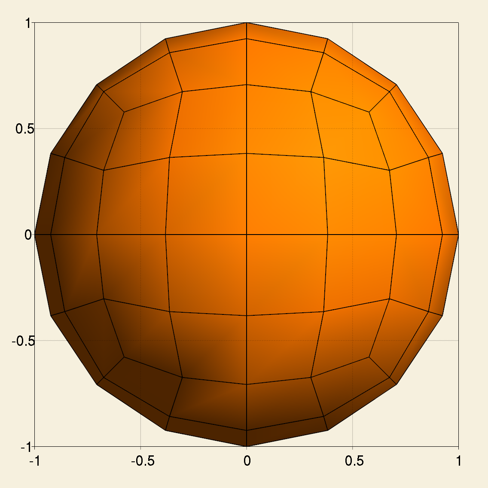
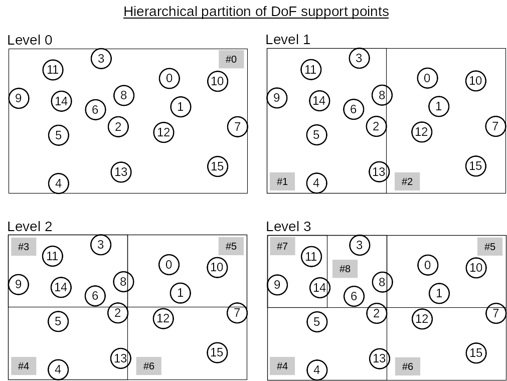
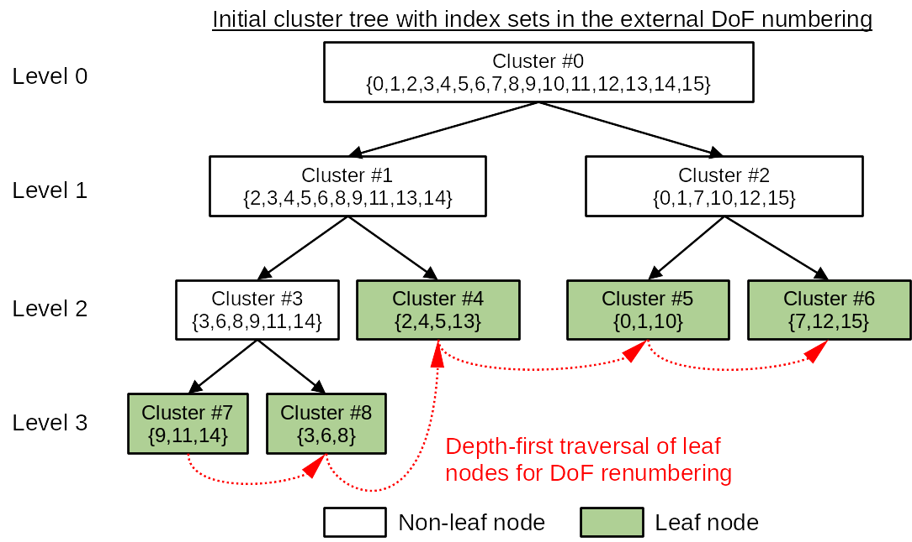
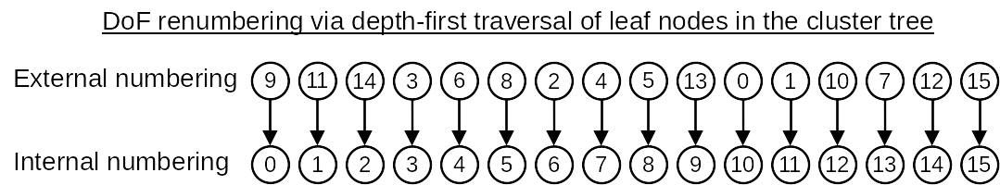
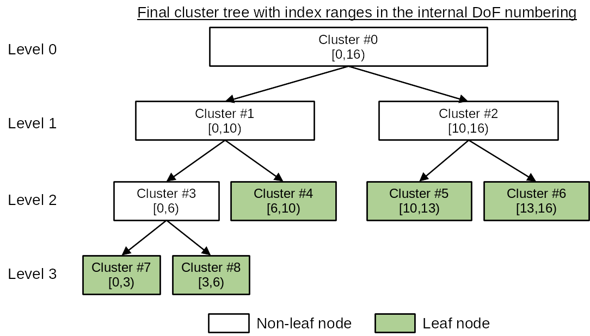
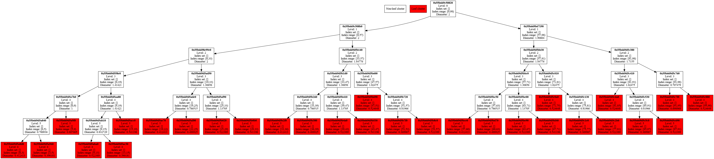

Build a cluster tree
Preliminary knowledge
Boundary integral operator
In a boundary integral equation (BIE), a boundary integral operator \(A: X \rightarrow Y\) transforms an input function \(u\in X\) to an output function \(v=Au \in Y\) on the boundary \(\Gamma\). Usually, a kernel function \(\kappa(x,y)\) is associated with \(A\), which defines its transformation behavior as
\[\begin{equation} v(x) = (Au(y))(x) = \int_{\Gamma} \kappa(x,y) u(y) \intd s_y. \end{equation}\]As a convention, we use \(y\) as the source point and \(x\) as the target point. This integral can be understood like this:
- \(u(y)\) is the distribution of source or excitation on the boundary \(\Gamma\);
- the kernel function \(\kappa(x,y)\) is the potential generated by a unit Dirac source at \(y\), i.e. \(\delta(x-y)\);
- the integral is a convolution of the system’s unit impulse response \(\kappa(x,y)\) and the source \(u(y)\);
- the output function \(v(x)\) is the potential on \(\Gamma\) produced by the source \(u(y)\).
Taking the Laplace equation with Dirichlet boundary conditions as an example, the BIE obtained from the direct method is
\[\begin{equation} V \gamma_1^{\mathrm{int}} u = (\sigma I + K)g \quad x\in\Gamma \end{equation}\]where
- \(u\in H^{1/2}(\Gamma)\) is the potential on the boundary \(\Gamma\),
- \(V: H^{-1/2}(\Gamma) \rightarrow H^{1/2}(\Gamma)\) is the single layer potential operator,
- \(\gamma_1^{\mathrm{int}} u\in H^{-1/2}(\Gamma)\) is the interior Neumann trace of \(u\),
- \(I: H^{1/2}(\Gamma) \rightarrow H^{1/2}(\Gamma)\) is the identity operator,
- \(K: H^{1/2}(\Gamma) \rightarrow H^{1/2}(\Gamma)\) is the double layer potential operator, and
- \(g\in H^{1/2}(\Gamma)\) is the prescribed Dirichlet boundary data.
Thus, there are two boundary integral operators in this equation: \(V\) and \(K\).
Variational formulation and bilinear forms
In the Galerkin boundary element method (BEM), both sides of the BIE are projected onto the dual space \(Y'\) of the range space \(Y\). This yields the variational formulation of the BIE, which contains bilinear forms like this:
\[\begin{equation} b_A(u,w) = \langle Au, w \rangle = \langle v,w \rangle, w\in Y', \end{equation}\]where \(b_A: X \times Y \rightarrow \mathbb{R}\).
The projection to \(Y'\) can be understood as measuring output functions of boundary integral operators. For the Laplace Dirichlet problem, its variational formulation is
\[\begin{equation} \langle Vt, \psi \rangle_{\Gamma} = \langle (\sigma I + K)g, \psi \rangle_{\Gamma} \quad \forall \psi\in H^{-1/2}(\Gamma), \end{equation}\]where \(t= \gamma_1^{\mathrm{int}} u\), \(\psi\) is the test function in the dual space. The two bilinear forms are \(b_V\) and \(b_{\sigma I + K}\). \(b_{\sigma I + K}\) can be further decomposed as \(\sigma b_I\) and \(b_K\).
\[\begin{equation} \begin{aligned} b_V(t,\psi) &= \int_{\Gamma} \psi(x) \int_{\Gamma} U^{\ast}(x,y) t(y) \intd s_y \intd s_x \\ b_K(g, \psi) &= \int_{\Gamma} \psi(x) \int_{\Gamma} K(x,y) g(y) \intd s_y \intd s_x \\ b_I(g, \psi) &= \int_{\Gamma} g(x) \psi(x) \intd s_x \end{aligned}. \end{equation}\]Both \(b_V\) and \(b_K\) are related to boundary integral operators, hence they are double integrals. \(b_I\) is related to the identity operator, which is only a single integral. \(U^{\ast}(x,y)\) is the fundamental solution of the Laplace equation and \(K(x,y)\) is the interior Neumann trace of \(U^{\ast}(x,y)\) with respect to the variable \(y\).
Discretization of bilinear forms
The function space \(X\) of \(u\) in the bilinear form \(b_A(u,w)\) is called the trial or ansatz space, while the function space \(Y'\) of \(w\) is called the test space. After we choose bases for \(X\) and \(Y'\), the bilinear form \(b_A\) can be discretized into a matrix \(\mathcal{A}\).
- The columns of \(\mathcal{A}\) correspond to degrees of freedom (DoFs) in a finite dimensional approximation \(X_h\) of the trial space \(X\).
- The rows of \(\mathcal{A}\) correspond to DoFs in a finite dimensional approximation \(Y_h'\) of the test space \(Y'\).
Each entry of \(\mathcal{A}\) represents the interaction between a pair of DoFs in \(X_h\) and \(Y_h'\) respectively.
Because the kernel of the boundary integral operator is long-range (non-compactly supported), \(\mathcal{A}\) is a dense matrix. However, if the kernel is asymptotically smooth, when a cluster of adjacent DoFs in the test space, whose DoF index set is \(\tau\), are well separated from a cluster of adjacent DoFs in the trial space, whose DoF index set is \(\sigma\), their interaction is small and the corresponding submatrix \(\mathcal{A}\big\vert_{\tau\times\sigma}\) has a small rank. Hence, even though \(\mathcal{A}\) has a full matrix pattern, its effective information or data is sparse. HierBEM adopts the \(\mathcal{H}\)-matrix technique to exploit this data-sparsity, which reduces storage and computation complexity from quadratic to log-linear.
Cluster trees
To build an \(\mathcal{H}\)-matrix, the two sets of DoFs in the trial and test spaces should be respectively organized into binary cluster trees. Each node in such a cluster tree is a subset/cluster of DoF indices. The root node of a cluster tree contains the indices of all DoFs in the finite element adopted for the function space. This root node will then be recursively partitioned based on the locations of DoF basis functions. If the finite element has support points, such as Lagrange finite elements FE_Q and FE_DGQ in deal.II, we directly use support points as basis function locations.
Once the two cluster trees for the trial and test spaces are built, a block cluster tree is constructed by taking the tensor product of nodes on a same level in the two cluster trees. This block cluster tree defines a hierarchical block structure, according to which the \(\mathcal{H}\)-matrix representation of \(\mathcal{A}\) will be built.
In this example, we’ll demonstrate how to construct a cluster tree in HierBEM. The construction of a block cluster tree and an \(\mathcal{H}\)-matrix will be described in subsequent examples.
Build a cluster tree for DoFs on a sphere
At first, we include necessary header files and use namespaces HierBEM and dealii.
#include <deal.II/base/point.h>
#include <deal.II/base/types.h>
#include <deal.II/dofs/dof_handler.h>
#include <deal.II/dofs/dof_tools.h>
#include <deal.II/fe/fe_q.h>
#include <deal.II/fe/mapping_q.h>
#include <deal.II/grid/grid_generator.h>
#include <deal.II/grid/grid_in.h>
#include <deal.II/grid/grid_out.h>
#include <deal.II/grid/tria.h>
#include <fstream>
#include <iostream>
#include "cluster_tree/cluster_tree.h"
using namespace HierBEM;
using namespace dealii;
Next we enter the main function. At the beginning, we create a triangulation for a unit sphere centered at the origin, which is a 2D manifold embedded in 3D space. The triangulation is refined globally for 2 times.
const unsigned int dim = 2;
const unsigned int spacedim = 3;
const Point<spacedim> center(0, 0, 0);
const double radius(1);
const unsigned int refinement = 2;
Triangulation<dim, spacedim> tria;
GridGenerator::hyper_sphere(tria, center, radius);
tria.refine_global(refinement);
We save the mesh to an MSH file, which can be visualized in Gmsh.
GridOut grid_out;
std::ofstream mesh_file("sphere.msh");
grid_out.write_msh(tria, mesh_file);

Create a first order Lagrange finite element and a corresponding DoF handler.
const unsigned int fe_order = 1;
FE_Q<dim, spacedim> fe(fe_order);
DoFHandler<dim, spacedim> dof_handler(tria);
dof_handler.distribute_dofs(fe);
To get the coordinates of all support points in the DoF handler, we need a mapping object of the type MappingQ. The mapping object is used for transforming support points in the unit quad cell \([0,1] \times [0,1]\) to all real cells in the triangulation. We choose second order mapping to approximate the curved surface of the sphere. The coordinate transformation is performed in the function DoFTools::map_dofs_to_support_points.
const unsigned int mapping_order = 2;
const MappingQ<dim, spacedim> mapping(mapping_order);
std::vector<Point<spacedim>> support_points(dof_handler.n_dofs());
DoFTools::map_dofs_to_support_points(mapping, dof_handler, support_points);
Generate a list of DoF indices starting from zero.
std::vector<types::global_dof_index> dof_indices(dof_handler.n_dofs());
for (types::global_dof_index d = 0; d < dof_indices.size(); d++)
dof_indices[d] = d;
With the support point coordinates and corresponding DoF indices, we can now create a cluster tree.
const unsigned int n_min = 4;
ClusterTree<dim> cluster_tree(dof_indices, support_points, n_min);
Within the constructor of ClusterTree, only a root cluster is created. The provided list of support points in support_points is used to build a bounding box enclosing all DoF support points. Each cluster in a cluster tree has a bounding box, the edges of which are parallel with the coordinate frame’s axes.
Then we call the member function ClusterTree::partition and the root node will be recursively partitioned and the cluster tree is gradually built up.
cluster_tree.partition(support_points);
The recursive partition stops when the cardinality of the current cluster, i.e. number of DoFs in it, is smaller than n_min. Then the current cluster becomes a leaf node of the cluster tree.
After the cluster tree is built, the DoF indices in each cluster generally do not form a continuous index range. Therefore, the function ClusterTree::partition will then traverse the leaf nodes of the cluster tree by following a depth-first search and reassign each DoF in a cluster with a new index so that each cluster in the cluster tree holds a continuous DoF index range. In HierBEM, the original DoF indices are called external numbering, while the new DoF indices are called internal numbering. This reordering of DoF indices are mandatory if iterative linear solvers like conjugate gradient (CG), generalized minimal residual (GMRES) etc. are adopted to solve the system matrix.
The above concept is illustrated in the following figures.




Finally, we export the cluster tree as a directed graph, which can be visualized with PlantUML.
std::ofstream graph("cluster-tree.puml");
cluster_tree.print_tree_info_as_dot(graph);
graph.close();
On the command line, execute plantuml to generate a PNG figure of the directed graph.
plantuml cluster-tree.puml

For more details, please check the source code of this example in hierbem/examples/build-cluster-tree/build-cluster-tree.cc.